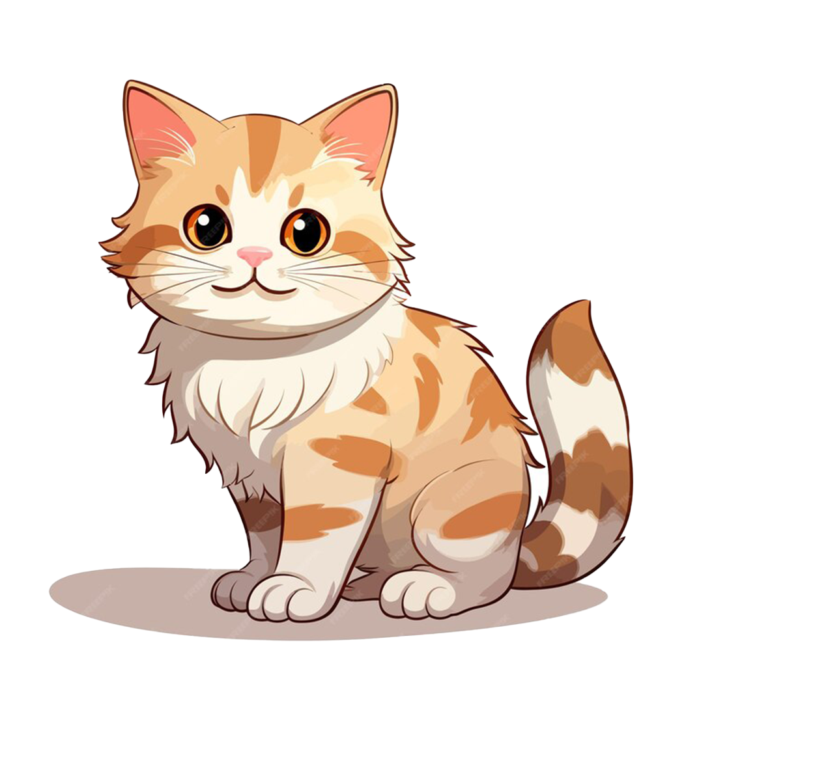
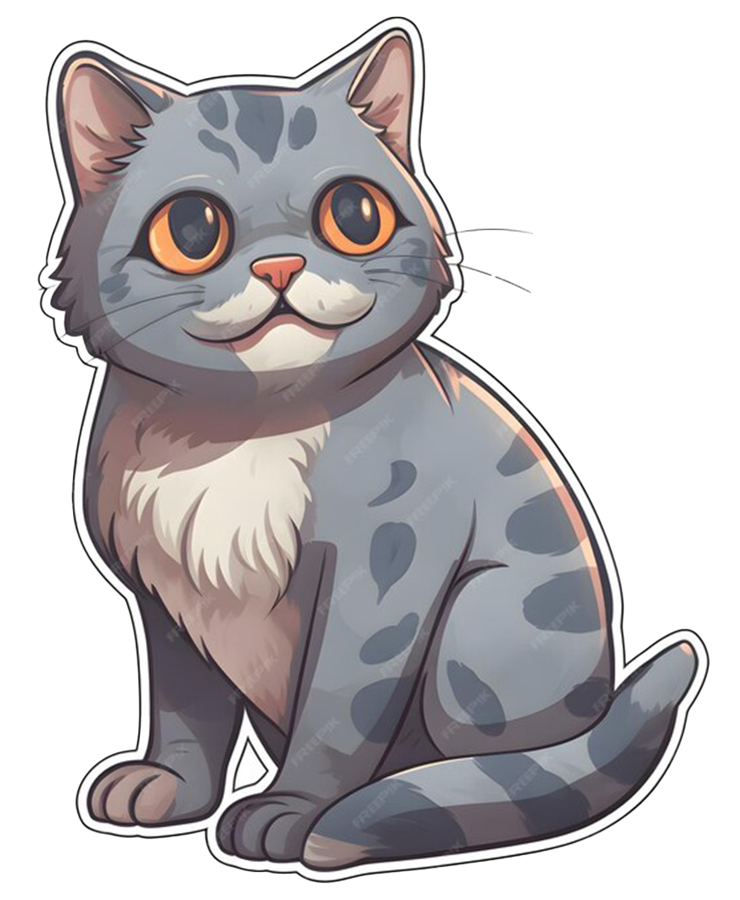
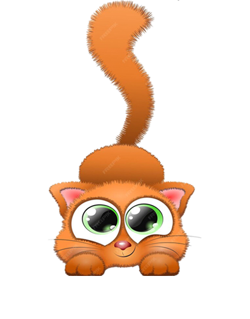
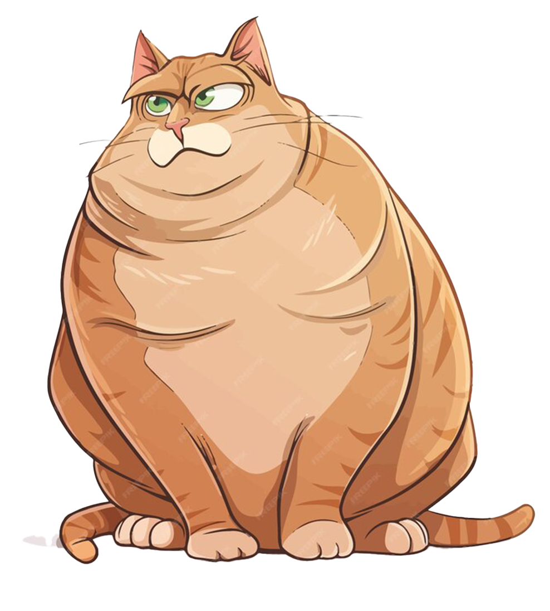

KonekoChi
Accueil
Bienvenue dans votre collection. Cliquez sur la photo d'un chaton pour obtenir des informations sur lui




Nom: Caramel
Age: 2 mois
Caramel est un jeune chaton qui peut se montrer timide au premier abord et très affectueux ensuite.
Retour
Nom: Miso
Age: 4 mois
Miso est un jeune chat siamois fidèle et affectueux qui adore dormir dans son panier près du feu
Retour
Nom: Zunny
Age: 2.5 mois
Zunny n'en a pas l'air comme ça mais il est très facétieux et cachera ses jouets dans vos chaussures si vous n'y prenez pas garde
Retour
Nom: Chonker
Age: 1 mois
La maman de Chonker a du sang de lynx dans les veines ce qui donne un très gros chaton plein d'affection
Retour